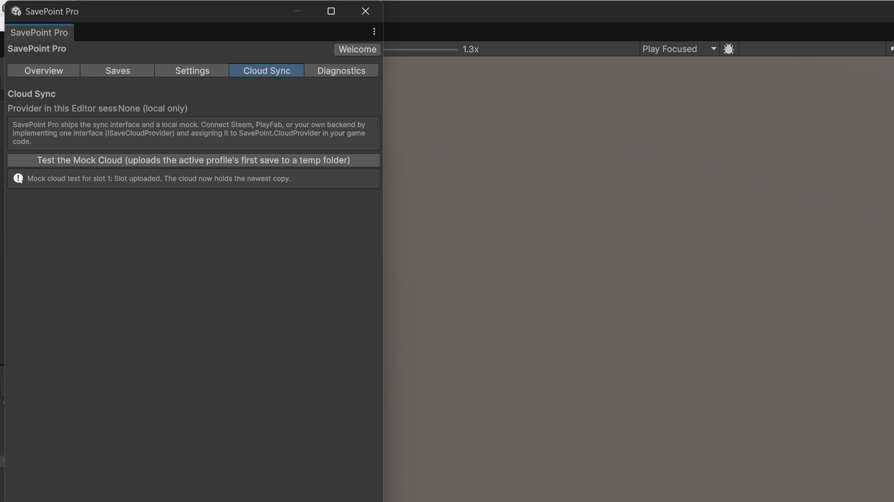

Cloud sync interface
SavePoint Pro is not a cloud service, and no platform provider ships in the box. What ships is the seam: a four-method provider interface you implement against your own backend, plus a local mock provider for development, so nothing in your game depends on a live service while you build.

The model
Saves live on the device. The cloud interface moves whole files between the device and your backend — it is single-device authority, not a multiplayer or server-authoritative save system.
How sync decides
When two copies of a slot diverge, sync takes the newer one. There is no save merging — fields from two copies are never combined. An exact tie is not resolved by a dialog; it is reported through the conflict callback so your game decides how to present it.
Develop with the mock first
Wire your UI and flows against the local mock provider (the diagnostics self-check runs a mock sync roundtrip). Swap in your real provider behind the same interface when the backend is ready. A platform provider (for example against a storefront SDK) follows the same shape: read a file, write a file, list, delete — the example shape is in the package's cloud sync guide.